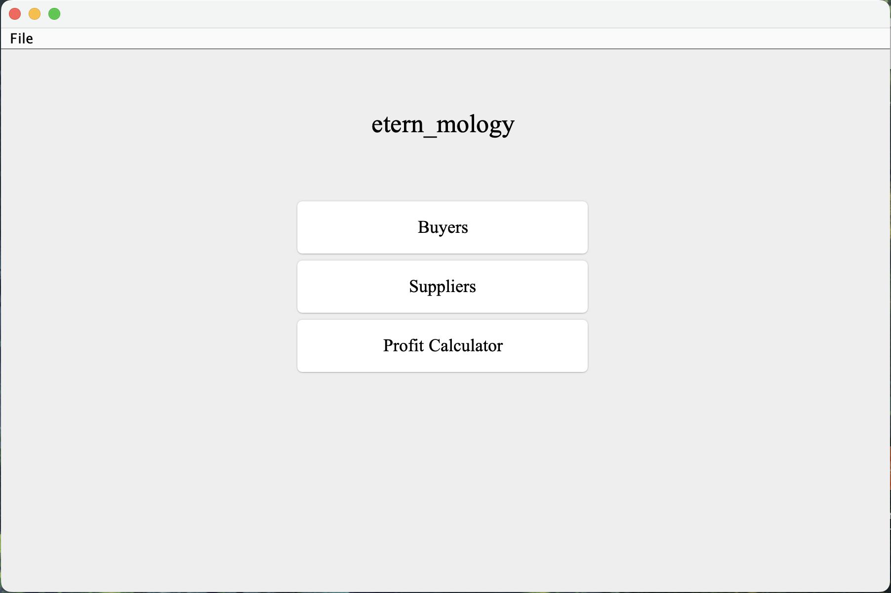
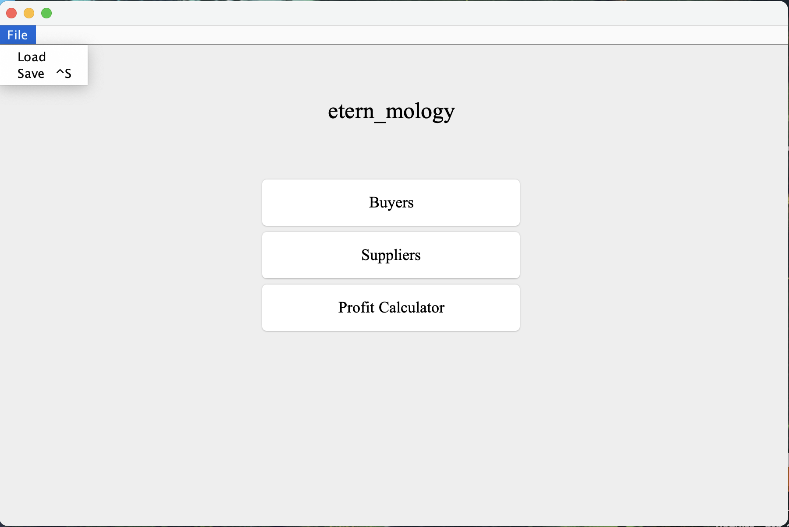
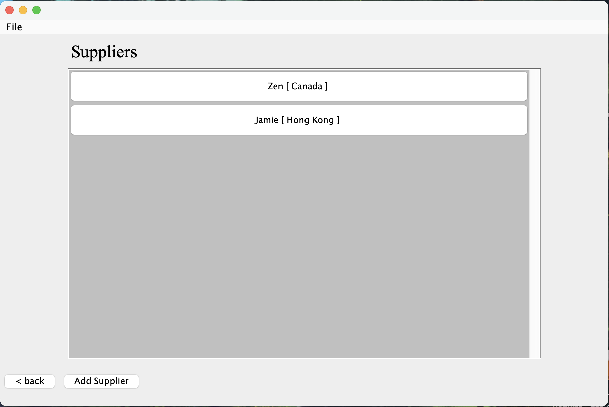
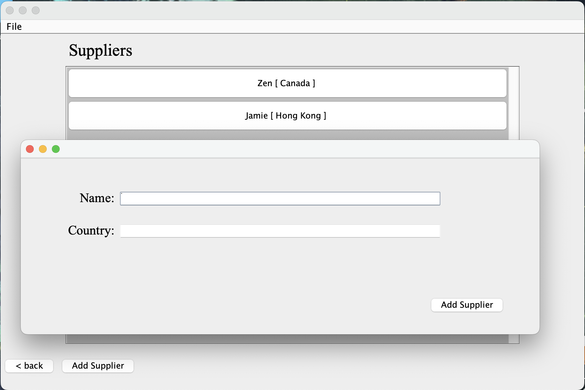
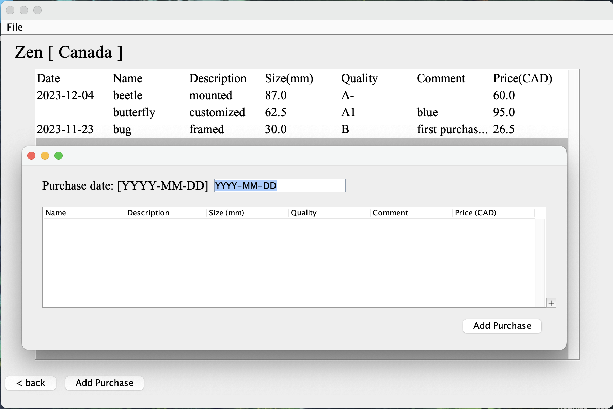

Profit calculator (in progress)
October 2023 - now
Java application that keeps track of customers, suppliers, as well as the overall profit of a small business. The application is built based on Object-Oriented design that implements Observer and Iterator design patterns through a Test-Driven development with Junit testing. This ensures both the functionality and stability of the application’s reaction to a user action. A Java Swing GUI is also implemented for users to freely navigate between functionalities with intuitive data persistence achieved by utilizing JSON.
Main menu with 3 main functionalities: record Customers, record Suppliers, and calculate profit.
Possible to save or load anytime in the application.
Suppliers screen where all the suppliers and their Country is shown. Same design with Buyers.
If "Add Supplier" button is clicked, a window with prompts pop up. It is possible to add to the list of suppliers here.

If a specific supplier is clicked, you will be brought to this screen. You can see all the purchases you have made from this supplier.
If "Add Purchase" is clicked, you can add a new purchase for this supplier with a date and one or more items.
- Developed a Java application on IntelliJ that keeps track of the customers and suppliers of a small business, and calculates profit by utilizing Java’s built-in classes (HashMap, ArrayList, etc.) through Object-Oriented Development
- Implemented data persistence through JSON with automatic saving/loading to enhance user experience
- Built a GUI with Java Swing that allows user to conveniently navigate between windows and panels and interact with the program’s functionalities
- Ensured the accurate functionality and stability of the program through Test-Driven Development with the JUnit framework, including the implementation of simple to complex test cases
- Integrated the observer and iterator design pattern for an immediate update responding to user action